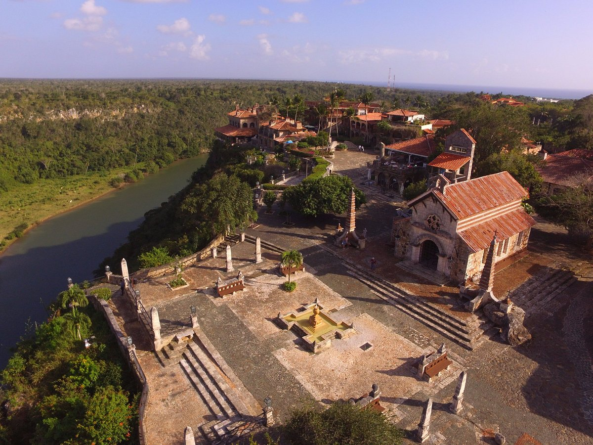
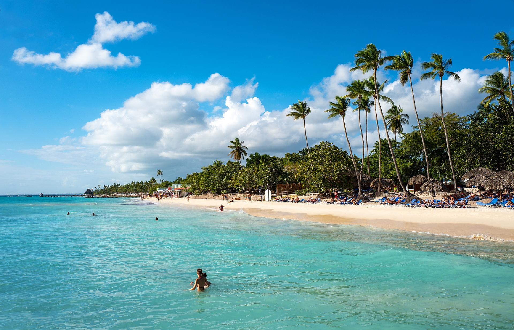
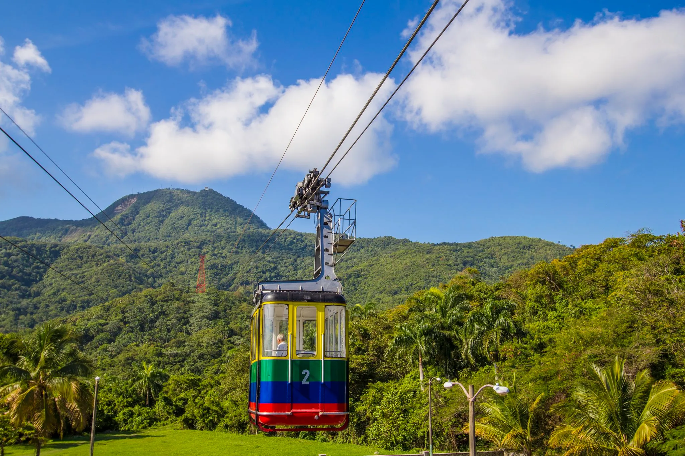
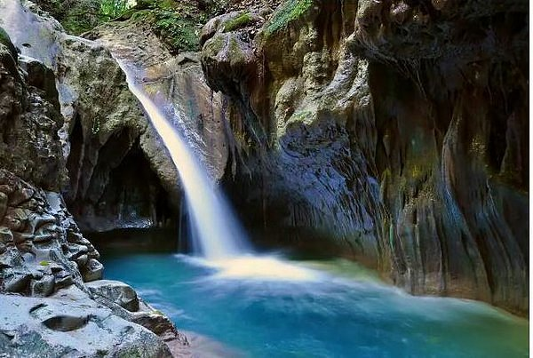

Republica Dominicana pais de sueños y esperanzas

CARACTRISTICAS GENERALES DE REPUBLICA DOMINICANA
Tiene una superficie de 48,422 kilómetros cuadrados y una población de 10´276,621 habitantes
TURISMO DE REPUBLICA DOMINICANA
En las modalidades de turismo que ofrece la región, la predominante es la modalidad de sol y playa acompañada de complejos hoteleros, mientras que otras modalidades son preponderantes en ciertos países como la modalidad de crucero y otras se encuentran en desarrollo.
Summary in English
The Dominican Republic is a country in America located in the Caribbean, located in the central area of the Antilles; It occupies the central and eastern part of the island of Hispaniola. Its capital and most populated city is Santo Domingo. It borders to the north with the Atlantic Ocean, to the east with the Mona Channel, which separates it from Puerto Rico, to the south with the Caribbean Sea, and to the west with Haiti, which is the other country located in Hispaniola. With 48,448 km² and a population of more than 11.3 million inhabitants in June 2023, it is the second largest country of the Caribbean island countries, after Cuba, and the third most populated, after Haiti and Cuba. In the territory of the country, inhabited by Taínos since the 7th century, Christopher Columbus landed in 1492, making it the site of the first permanent European settlement in America. The country achieved first independence in 1821, but was invaded by neighboring Haiti in 1822. Following the victory in the Dominican War of Independence in 1844, Dominicans experienced several struggles, mostly internal, and also a brief return of Spanish domination (1861-1865). In a period of twelve years, two presidents were assassinated (Ulises Heureaux in 1899 and Ramón Cáceres in 1911). The United States occupied the country from 1916 to 1924, followed by a relatively calm and prosperous six-year period under the leadership of Horacio Vásquez.
CARACTERISTICAS GENERALES DEL PAIS
Información general sobre las características del país.
TURISMO EN EL PAIS
| TOUR 1 | TOUR 2 | TOUR 3 | TOUR 4 | TOUR 5 | |
|---|---|---|---|---|---|
| LUGAR | PUNTA CANA | ALTOS DE CHAVON | ISLA SAONA | TELEFERICO DE PUERTO PLATA | 27 CASCADAS DE DAMAJAGUA |
| UBICACIÓN | La Altagracia-Republica Dominicana | La Romana-Republica Dominicana | Parque Nacional del Este-Republica Dominicana | Puerto Plata-Republica Dominicana | Damajagua-Republica Dominicana |
| ACTIVIDADES PARA HACER |
|
|
|
|
|
| FOTOS |  |
 |  |  |  |
| COSTO DE VISITA |
|
|
|
|
|
| MEDIOS DE TRANSPORTE | taxis, autobús | Coche y en autobús, metro tours | barcos, autobús y lanchas | taxi | a pie |
| COSTO TOTAL | 1,444,308 | 563,252 | 1,995,853 | 2,132,659 | 80,650 |